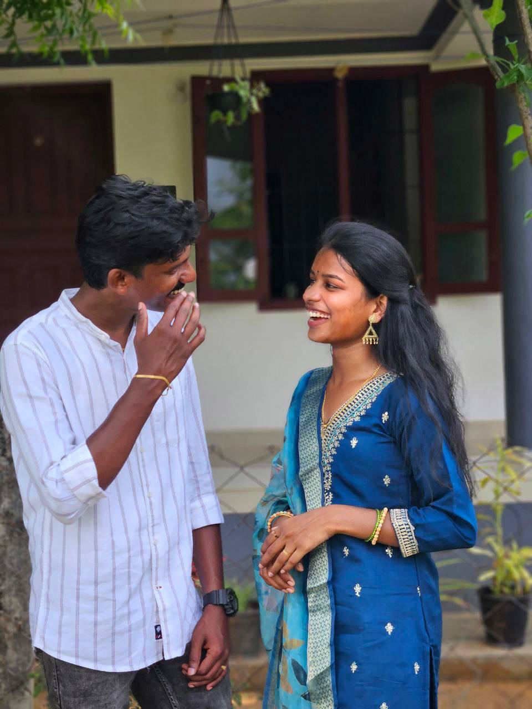
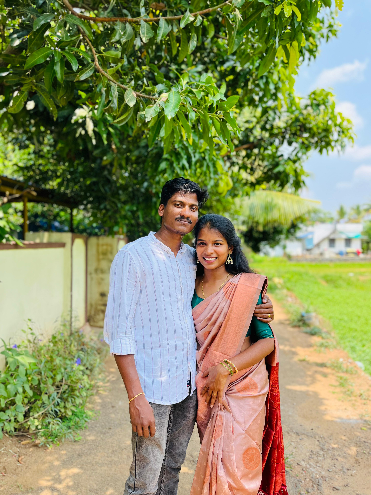
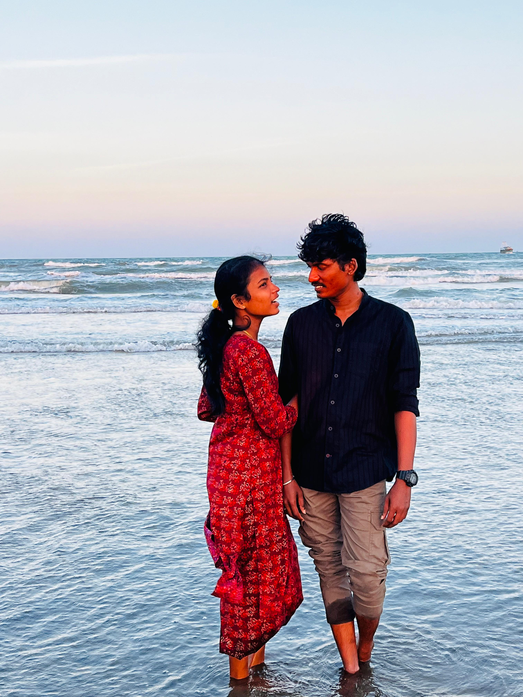
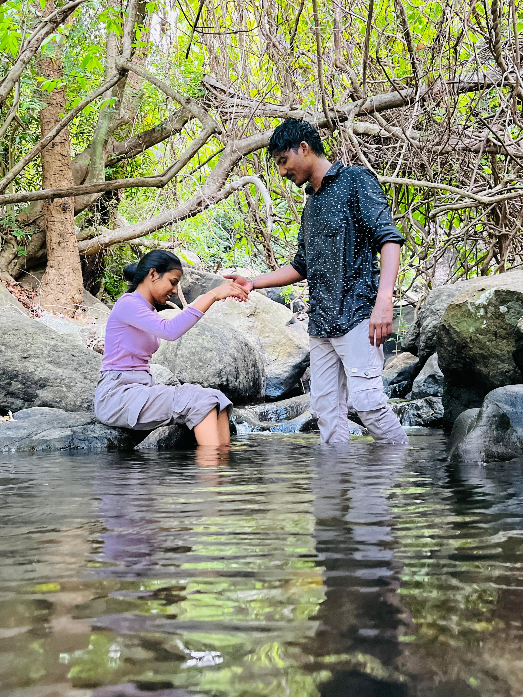

💫 “I am the Universe… and I have a little secret.” 💫
In August 2021, I planted a seed. Its name was Suriyaprakash, a bright young man who walked into an office in Chennai with a bag full of dreams, no clue about what I was secretly planning. One year later, I placed Sisira in the very same office. She had her own dreams, her own coffee breaks, her own world. And yet… they never even noticed each other.
Oh, but I’m patient. I’m the Universe.
Fast-forward to mid-2023. One ordinary day, Suriya’s eyes finally found Sisira. And just like that, something in his heart quietly switched from “normal” to “oh no… I’m in trouble.” The only problem? She didn’t even know he existed. So I sent in my secret agent: a mutual friend. Through this friend, Suriya started collecting little details about her — her name, her laugh, her tiny quirks. Every new piece of information was like adding another petal to a flower he didn’t even know he was growing.
Then came October 2024, just before Deepavali. Trouble from home arrived: his parents had found a girl for an arranged marriage. Cornered, Suriya finally blurted out the truth — “There’s someone I like… her name is Sisira. Give me time.”
And on her side? I nudged a small coincidence into place. One day, at work, she had a process issue and needed help from someone in Suriya’s shift. She walked over… and there he was. That night, after months of ignoring his Instagram requests, she finally pressed “Accept.” At first, she warned him: “I’m not interested in love.” He simply said, “That’s fine. Let’s just talk as friends. But I like you… a lot.”
Day by day, message by message, they began to know each other. A few meet-ups later, she realized she’d already lost her heart. Then came the “meet my mom” moment. She agreed, perhaps out of curiosity… but when she met his mother, something clicked. His mom adored her instantly. Within hours, she was on video call with his entire extended family — a dream come true for a girl who always wished to marry into a big, loving clan.
From there, the path was simple. Her sister discovered the romance, championed it to the family, and soon both sides were on the phone making plans. They exchanged thambulam in Palakkad, ate together, and decided: They will handle the engagement and reception; her family will take care of the wedding. And here we are…

Two hearts, One promise,
And a lifelong journey that officially begins now. 💍✨